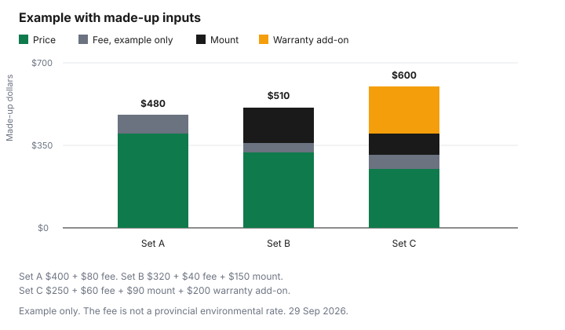

Technology · Canada
Buying a TV on Black Friday in Canada: Specs That Matter and Doorbuster Traps
When buying a TV on Black Friday in Canada, measure your viewing distance and read the full model number, because a doorbuster can differ from the mainline set by the panel. In Quebec, a new TV bought from a merchant from 5 October 2026 has a 4-year warranty of good working order. A Black Friday television ad is a screen size and a price. The set you live with is a panel, a set of ports, and a model number. This page is a spec checklist. It does not name a brand, and it does not pick a model. Timing across the two holiday weekends is on the tech timing guide. Appliances on the same weekends are a different purchase, on the appliance timing guide.
Key takeaways
- Measure your seat-to-screen distance and compare sizes from that seat. This page does not publish a viewing-distance formula.
- Read the full model number. A doorbuster can differ from the mainline set by a letter, and that letter can be the panel.
- In Quebec, a new TV bought from a merchant from 5 October 2026 has a 4-year warranty of good working order. It is automatic, free, and counted from delivery.
- An environmental handling fee varies by province. This guide does not quote one. Check the receipt and your province's program.
- A "was" price still has to meet the Competition Bureau's ordinary-price tests. A crossed-out number is not proof.
Size and viewing distance
Stand where you will actually sit. Measure from that seat to the wall, in the room's real light, not from the couch in the store.
Look at two sizes from a matching distance if the retailer has them on, or use a size tool only if the page tells you the method. A marketing "recommended for your room" line is the retailer's line. This guide does not give a distance-to-diagonal multiple. Treat any multiple you see as the publisher's rule of thumb, not a standard.
Also measure the cabinet and the doorway. A set that is right at the seat and wrong for the stairs is not a saving. Write the size you viewed next to the model number so a later flyer cannot swap a larger number onto a different set.
Panel types
The words on the card are categories, not a ranking. An LCD set uses a backlight.
"LED" usually describes that backlight, not a separate kind of picture. "QLED" and "Mini-LED" are names layered on LCD. Read the spec sheet for what the name means on that model: a quantum-dot layer, a denser backlight, or both. OLED is a different panel type. If you watch a channel with a static logo for hours, ask the retailer what that model says about image retention. Do not treat any of these names as a winner.
Refresh rate belongs on the spec sheet as a number, and you want the native rate, not a motion effect with a different name. HDR support is a list of formats. Match it to the sources you use, such as a streaming app or a cable box, instead of assuming every set handles every format. Ports matter if you still plug in a sound bar, a game console or an antenna. Count HDMI ports on the model you are buying, not on the demo unit. Smart-platform support is a software question. Check the maker's update policy for that platform. This page does not state a number of years.
| Spec | What to record | Marketing line to set aside |
|---|---|---|
| Size | Inches on the carton, viewed from your seat distance | "Perfect for any room" without a distance |
| Panel type | LCD, OLED, or the backlight words the sheet actually uses | A trade name with no panel underneath |
| Refresh rate | The native rate on the spec sheet | A motion effect with a different number |
| HDR support | The formats listed for that model | "HDR" with no format named |
| Ports | HDMI count and any audio output you need | The demo unit's ports |
| Smart platform support life | The maker's update policy for that platform | A year count that is not on the maker's page |
Doorbuster models vs mainline
A doorbuster is a count and a model number. The size in the ad can match a mainline set while the panel, the ports or the tuner do not.
Write both model numbers side by side. If you cannot find the doorbuster number on the maker's site, treat that as a reason to slow down, not as a reason to assume it is the same set. A "was" price on either model is still an ordinary-price claim. The Competition Bureau's guidelines, dated 16 October 2009 and checked 29 Sep 2026, use a volume test and a time test, and the page says those guidelines are under review. The tech timing guide walks through the more-than-50-percent readings. A crossed-out price is not proof.
| Check | Doorbuster | Mainline set you sat with |
|---|---|---|
| Model number | Full number from the tag | Full number, not the series name |
| Return terms | Check the retailer, including final sale | Check the retailer. Do not assume they match |
| Warranty | Manufacturer term on that model, plus Quebec if it applies | Same reading, on that model's page |
Warranty and Quebec's 4-year TV warranty
The manufacturer warranty is whatever that maker prints for that model. Check it.
On top of a store plan, Quebec has a legal warranty for many new goods. Checked 29 Sep 2026, quebec.ca says the warranty of good working order covers a new television bought or leased from a merchant from 5 October 2026, for 4 years from the delivery date. It is automatic and free. The duration must be shown near the price. If the set stops working properly, the merchant or the manufacturer handles a free repair, including parts, labour and reasonable costs to send it. The reasonable-durability warranty still applies, including when you want a remedy other than repair. The Quebec warranty guide is the full page. Do not pay for a longer story than that until you have read it.
A store extended warranty is optional and priced by the retailer. The extended-warranty guide is the household comparison of manufacturer coverage, card certificates and provincial law. This page does not quote a plan price or a deductible. Check the retailer.
Recycling fees
The sticker and the receipt can disagree by one line. An environmental handling fee is charged in provinces that run an electronics recycling program, and the amount is not national.
Checked 29 Sep 2026, recyclemyelectronics.ca says the Electronic Products Recycling Association operates regulated programs in nine provinces and asks you to select yours. This guide does not quote a dollar fee. Read the line on your receipt, and read the household fee guide for how these charges are described. A mount, a delivery, and a warranty add-on are separate from that fee. Each one belongs in the total before you compare two flyers.
| Cost | Where it shows up | What this guide states |
|---|---|---|
| Environmental handling fee | A separate line, varying by province and device | No dollar figure. Select your province at recyclemyelectronics.ca and read the receipt |
| Mount | In the box, or a separate purchase, or an installation charge | Check the retailer. A wall that needs studs is not included in a flyer price |
| Delivery | Checkout, or a fee at the door | Check the retailer, including stairs and packaging removal |
| Warranty add-on | A store plan offered at checkout | No price quoted. Compare it with the manufacturer term and, in Quebec, the 4-year legal warranty |
Example with made-up inputs. The chart splits three imaginary television purchases into a sticker, an example environmental fee, a mount and a warranty add-on. The fee is not a provincial rate, and none of the dollars is a store price.

Checklist
Before you pay, you should be able to read the model number back, name the panel type from the spec sheet, count the ports you need, and state the return window from that retailer's page. In Quebec, for a new set from 5 October 2026, the 4-year duration should be visible near the price. Add the fee, the mount and delivery only after you have seen them on the receipt preview. If any of those lines is missing, you are comparing stickers, not totals.
Sources & date stamps
- Quebec, Garantie de bon fonctionnement, checked 29 Sep 2026. New television bought or leased from a merchant from 5 October 2026: 4 years from delivery, automatic and free, duration shown near the price. Free repair if it stops working properly. Reasonable-durability warranty still applies. Office de la protection du consommateur release, 15 September 2026, states the same 4-year duration for a television.
- Competition Bureau, Ordinary Price Claims, guidelines dated 16 October 2009, checked 29 Sep 2026. Volume test and time test. The page says the guidelines are under review.
- Electronic Products Recycling Association, recyclemyelectronics.ca, checked 29 Sep 2026. Regulated programs in nine provinces. Select your province. No fee amount is quoted here.
Frequently asked questions
What TV size should I buy for my room?
Measure the distance from the seat to the wall, then look at two sizes from that seat in the store or on a retailer size tool that shows its method. This guide does not state a viewing-distance formula, because none was taken from a standard cited here. The right size is the one you can watch at your real distance without the picture feeling too large or too small.
Are Black Friday doorbuster TVs worse?
A doorbuster is a specific model in a limited count, and it can be a different panel from the set on the main shelf. Compare the full model number, not the screen size and the brand name. A different number can mean different ports, a different refresh rate, or a shorter support life. Check the retailer for that model's return terms.
Do I need an extended warranty on a TV?
This page does not tell you to buy or skip a store plan. In Quebec, a new television bought from a merchant from 5 October 2026 has a 4-year warranty of good working order, automatic and free, and the reasonable-durability warranty still applies. Compare any store plan with the manufacturer warranty and that legal warranty before you pay for an extra one. The household guide walks through that comparison.
What is the new Quebec warranty for TVs?
On quebec.ca, checked 29 Sep 2026, a television bought or leased new from a merchant from 5 October 2026 is covered for 4 years from the delivery date. The warranty is automatic and free, and the duration must be shown near the price. If the set stops working properly, you can ask the merchant or the manufacturer for a free repair. The household guide is the full explainer.
Why is there an extra fee on my TV receipt?
An environmental handling fee is a separate line from the sticker, and the amount depends on the province and the device. This guide does not quote a fee. Electronic Products Recycling Association says it operates regulated programs in nine provinces, and you select yours on recyclemyelectronics.ca. The household fee guide is the place to read how those charges show up.
Researched and drafted with AI assistance and fact-checked against official Canadian sources. How we create content.
Disclosure: Electronics retailer offers are an offer type. Saving Optimizer may earn a commission if a partner link is added later. No partnership is claimed. A retailer link does not change a panel, a warranty or a fee on the receipt. Education only.